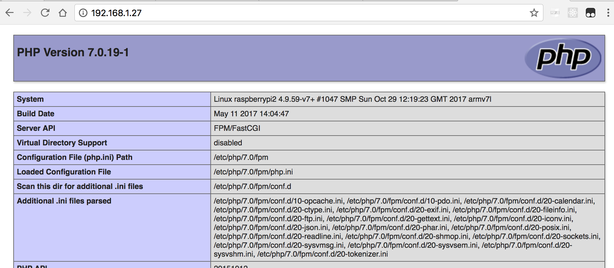
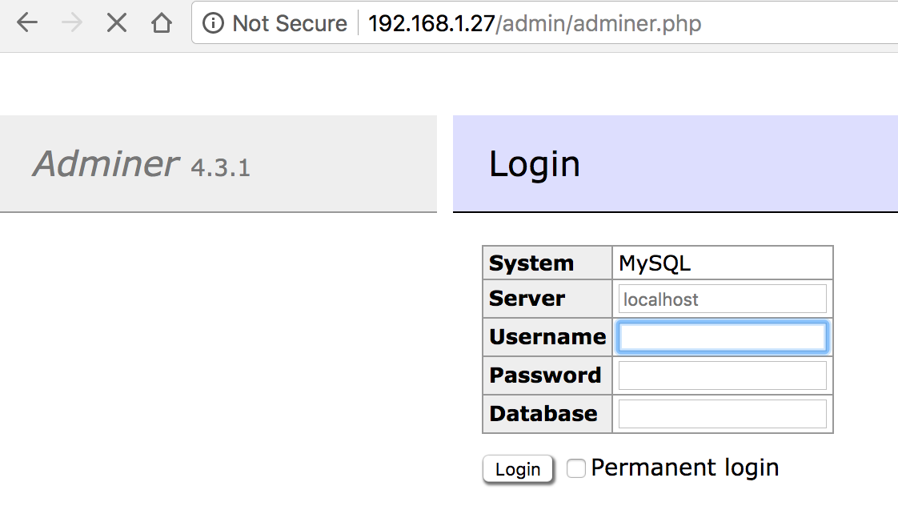
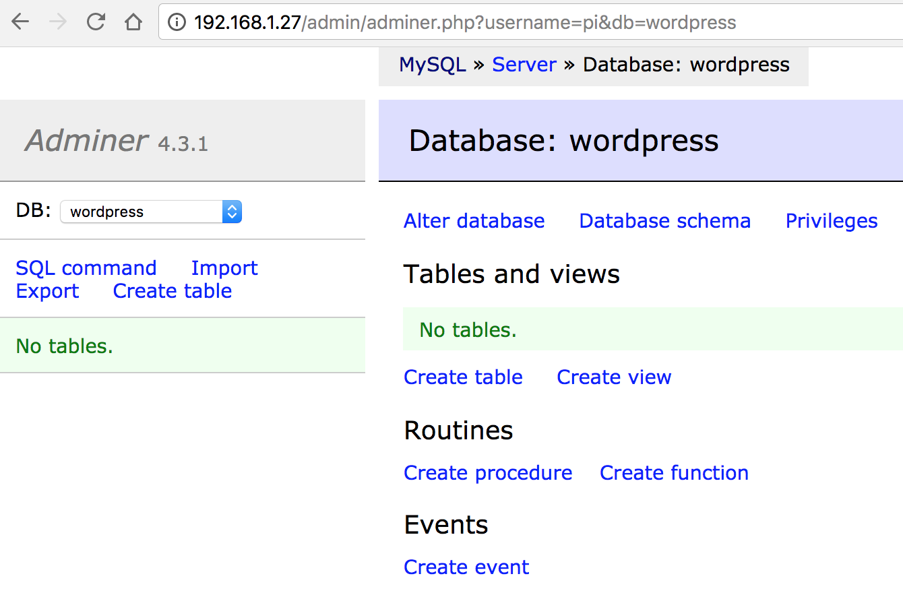
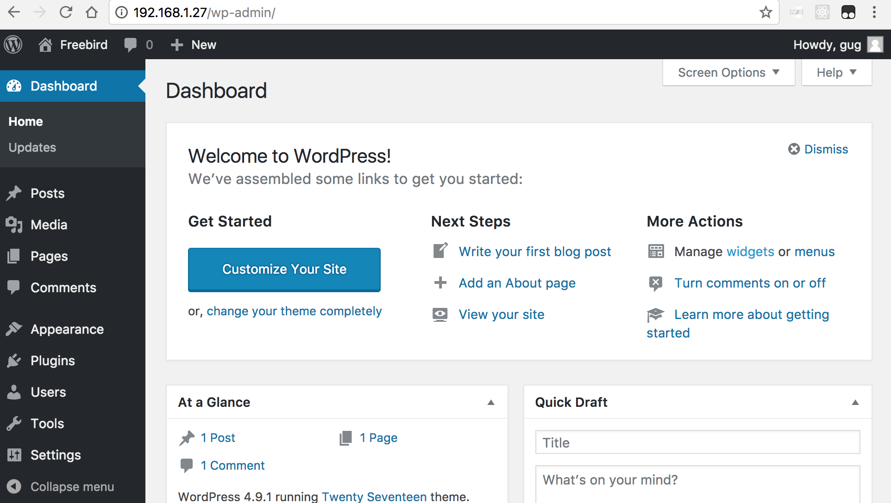

Wordpress on Raspberry Pi 3 Model B
Table of Contents
1 Introduction
Steps I attempted to get a wordpress website up on a respberrypi 3 with Ngnix, MariaDB and php7.
2 Config Nginx
I already have Nginx installed on the pi 3 from a previous project. For this project it's important to config nginx so that it knows to run php whenever it sees a *.php file. This means the defautl config file needs to include the location block below
location ~ \.php$ {
include snippets/fastcgi-php.conf;
fastcgi_pass unix:/run/php/php7.0-fpm.sock;
}
pi@raspberrypi2:~ $ ll /etc/nginx/sites-available/
total 4
-rw-r--r-- 1 root root 2416 Jul 12 05:44 default
pi@raspberrypi2:~ $ ll /etc/nginx/sites-enabled/
total 0
lrwxrwxrwx 1 root root 29 Nov 30 02:03 default -> /home/pi/lab/nginx/default.wp
pi@raspberrypi2:~ $ cat ~/lab/nginx/default.wp
server {
listen 80;
root /var/www/html;
index index.php index.html;
server_name 192.168.1.27;
location ~ \.php$ {
include snippets/fastcgi-php.conf;
fastcgi_pass unix:/run/php/php7.0-fpm.sock;
}
location ~ /\.ht {
deny all;
}
location / {
try_files $uri $uri/ =404;
}
}
pi@raspberrypi2:~ $ sudo service nginx restart
pi@raspberrypi2:~ $ tail /var/log/nginx/error.log
3 Install php7
We need php binary and others
pi@raspberrypi2:~ $ sudo apt-get install php-fpm
Reading package lists... Done
Building dependency tree
Reading state information... Done
The following additional packages will be installed:
php-common php7.0-cli php7.0-common php7.0-fpm php7.0-json php7.0-opcache php7.0-readline
Suggested packages:
php-pear
The following NEW packages will be installed:
php-common php-fpm php7.0-cli php7.0-common php7.0-fpm php7.0-json php7.0-opcache php7.0-readline
0 upgraded, 8 newly installed, 0 to remove and 0 not upgraded.
Need to get 2,706 kB of archives.
After this operation, 11.0 MB of additional disk space will be used.
Do you want to continue? [Y/n]
Selecting previously unselected package php-common.
(Reading database ... 50307 files and directories currently installed.)
Preparing to unpack .../0-php-common_1%3a49_all.deb ...
Unpacking php-common (1:49) ...
Selecting previously unselected package php7.0-common.
Preparing to unpack .../1-php7.0-common_7.0.19-1_armhf.deb ...
Unpacking php7.0-common (7.0.19-1) ...
Selecting previously unselected package php7.0-json.
Preparing to unpack .../2-php7.0-json_7.0.19-1_armhf.deb ...
Unpacking php7.0-json (7.0.19-1) ...
Selecting previously unselected package php7.0-opcache.
Preparing to unpack .../3-php7.0-opcache_7.0.19-1_armhf.deb ...
Unpacking php7.0-opcache (7.0.19-1) ...
Selecting previously unselected package php7.0-readline.
Preparing to unpack .../4-php7.0-readline_7.0.19-1_armhf.deb ...
Unpacking php7.0-readline (7.0.19-1) ...
Selecting previously unselected package php7.0-cli.
Preparing to unpack .../5-php7.0-cli_7.0.19-1_armhf.deb ...
Unpacking php7.0-cli (7.0.19-1) ...
Selecting previously unselected package php7.0-fpm.
Preparing to unpack .../6-php7.0-fpm_7.0.19-1_armhf.deb ...
Unpacking php7.0-fpm (7.0.19-1) ...
Selecting previously unselected package php-fpm.
Preparing to unpack .../7-php-fpm_1%3a7.0+49_all.deb ...
Unpacking php-fpm (1:7.0+49) ...
Setting up php-common (1:49) ...
Created symlink /etc/systemd/system/timers.target.wants/phpsessionclean.timer â /lib/systemd/system/phpsessionclean.timer.
Processing triggers for systemd (232-25+deb9u1) ...
Processing triggers for man-db (2.7.6.1-2) ...
Setting up php7.0-common (7.0.19-1) ...
pi@raspberrypi2:~ $ sudo apt-get install php
Reading package lists... Done
Building dependency tree
Reading state information... Done
The following additional packages will be installed:
php7.0
The following NEW packages will be installed:
php php7.0
0 upgraded, 2 newly installed, 0 to remove and 0 not upgraded.
Need to get 53.7 kB of archives.
After this operation, 87.0 kB of additional disk space will be used.
Do you want to continue? [Y/n] Y
Get:1 http://raspbian-us.ngc292.space/raspbian stretch/main armhf php7.0 all 7.0.19-1 [48.7 kB]
Get:2 http://raspbian-us.ngc292.space/raspbian stretch/main armhf php all 1:7.0+49 [5,016 B]
Fetched 53.7 kB in 0s (63.9 kB/s)
Selecting previously unselected package php7.0.
(Reading database ... 50455 files and directories currently installed.)
Preparing to unpack .../php7.0_7.0.19-1_all.deb ...
Unpacking php7.0 (7.0.19-1) ...
Selecting previously unselected package php.
Preparing to unpack .../php_1%3a7.0+49_all.deb ...
Unpacking php (1:7.0+49) ...
Setting up php7.0 (7.0.19-1) ...
Setting up php (1:7.0+49) ...
pi@raspberrypi2:~ $
pi@raspberrypi2:/etc/nginx/sites-enabled $ which php
/usr/bin/php
pi@raspberrypi2:/etc/nginx/sites-enabled $ php --version
PHP 7.0.19-1 (cli) (built: May 11 2017 14:04:47) ( NTS )
Copyright (c) 1997-2017 The PHP Group
Zend Engine v3.0.0, Copyright (c) 1998-2017 Zend Technologies
with Zend OPcache v7.0.19-1, Copyright (c) 1999-2017, by Zend Technologies
pi@raspberrypi2:/etc/nginx/sites-enabled $ ll /usr/bin/php
lrwxrwxrwx 1 root root 21 Nov 29 20:55 /usr/bin/php -> /etc/alternatives/php
pi@raspberrypi2:/etc/nginx/sites-enabled $ ll /etc/alternatives/php
lrwxrwxrwx 1 root root 15 Nov 29 20:55 /etc/alternatives/php -> /usr/bin/php7.0
pi@raspberrypi2:/etc/nginx/sites-enabled $ ll /usr/bin/php7.0
-rwxr-xr-x 1 root root 3127676 May 11 2017 /usr/bin/php7.0
pi@raspberrypi2:/etc/nginx/sites-enabled $
4 Test php

5 Install mariaDB
and php-mysql
pi@raspberrypi2:~ $ sudo apt-get install mysql-server Reading package lists... Done Building dependency tree Reading state information... Done The following additional packages will be installed: default-mysql-server galera-3 gawk libaio1 libarchive13 libcgi-fast-perl libcgi-pm-perl libdbd-mysql-perl libdbi-perl libencode-locale-perl libfcgi-perl libhtml-parser-perl libhtml-tagset-perl libhtml-template-perl libhttp-date-perl libhttp-message-perl libio-html-perl libjemalloc1 liblwp-mediatypes-perl liblzo2-2 libmariadbclient18 libreadline5 libsigsegv2 libterm-readkey-perl libtimedate-perl liburi-perl lsof mariadb-client-10.1 mariadb-client-core-10.1 mariadb-common mariadb-server-10.1 mariadb-server-core-10.1 mysql-common socat Suggested packages: gawk-doc lrzip libclone-perl libmldbm-perl libnet-daemon-perl libsql-statement-perl libdata-dump-perl libipc-sharedcache-perl libwww-perl mailx mariadb-test tinyca The following NEW packages will be installed: default-mysql-server galera-3 gawk libaio1 libarchive13 libcgi-fast-perl libcgi-pm-perl libdbd-mysql-perl libdbi-perl libencode-locale-perl libfcgi-perl libhtml-parser-perl libhtml-tagset-perl libhtml-template-perl libhttp-date-perl libhttp-message-perl libio-html-perl libjemalloc1 liblwp-mediatypes-perl liblzo2-2 libmariadbclient18 libreadline5 libsigsegv2 libterm-readkey-perl libtimedate-perl liburi-perl lsof mariadb-client-10.1 mariadb-client-core-10.1 mariadb-common mariadb-server-10.1 mariadb-server-core-10.1 mysql-common mysql-server socat 0 upgraded, 35 newly installed, 0 to remove and 0 not upgraded. Need to get 23.6 MB of archives. After this operation, 174 MB of additional disk space will be used. Do you want to continue? [Y/n] Y Get:1 http://raspbian-us.ngc292.space/raspbian stretch/main armhf libsigsegv2 armhf 2.10-5 [28.4 kB] Get:2 http://raspbian-us.ngc292.space/raspbian stretch/main armhf gawk armhf 1:4.1.4+dfsg-1 [508 kB] Get:3 http://raspbian-us.ngc292.space/raspbian stretch/main armhf liblzo2-2 armhf 2.08-1.2 [47.6 kB] Get:4 http://raspbian-us.ngc292.space/raspbian stretch/main armhf mysql-common all 5.8+1.0.2 [5,608 B] Get:5 http://raspbian-us.ngc292.space/raspbian stretch/main armhf mariadb-common all 10.1.23-9+deb9u1 [26.7 kB] Get:6 http://raspbian-us.ngc292.space/raspbian stretch/main armhf galera-3 armhf 25.3.19-2+rpi1 [874 kB] Get:7 http://raspbian-us.ngc292.space/raspbian stretch/main armhf libdbi-perl armhf 1.636-1+b1 [759 kB] Get:8 http://raspbian-us.ngc292.space/raspbian stretch/main armhf lsof armhf 4.89+dfsg-0.1 [311 kB] Get:9 http://raspbian-us.ngc292.space/raspbian stretch/main armhf libaio1 armhf 0.3.110-3 [9,366 B] Get:10 http://raspbian-us.ngc292.space/raspbian stretch/main armhf libreadline5 armhf 5.2+dfsg-3 [103 kB] Get:11 http://raspbian-us.ngc292.space/raspbian stretch/main armhf mariadb-client-core-10.1 armhf 10.1.23-9+deb9u1 [4,279 kB] Get:12 http://raspbian-us.ngc292.space/raspbian stretch/main armhf libarchive13 armhf 3.2.2-2 [254 kB] Get:13 http://raspbian-us.ngc292.space/raspbian stretch/main armhf libjemalloc1 armhf 3.6.0-9.1 [81.1 kB] Get:14 http://raspbian-us.ngc292.space/raspbian stretch/main armhf mariadb-client-10.1 armhf 10.1.23-9+deb9u1 [5,239 kB] Get:15 http://raspbian-us.ngc292.space/raspbian stretch/main armhf mariadb-server-core-10.1 armhf 10.1.23-9+deb9u1 [4,566 kB] Get:16 http://raspbian-us.ngc292.space/raspbian stretch/main armhf socat armhf 1.7.3.1-2+deb9u1 [320 kB] Get:17 http://raspbian-us.ngc292.space/raspbian stretch/main armhf mariadb-server-10.1 armhf 10.1.23-9+deb9u1 [4,670 kB] 78% [17 mariadb-server-10.1 3,066 kB/4,670 kB 66%] ... Selecting previously unselected package mysql-server. Preparing to unpack .../18-mysql-server_5.5.9999+default_armhf.deb ... Unpacking mysql-server (5.5.9999+default) ... Setting up libhtml-tagset-perl (3.20-3) ... Setting up libencode-locale-perl (1.05-1) ... Setting up libjemalloc1 (3.6.0-9.1) ... Setting up libtimedate-perl (2.3000-2) ... Setting up socat (1.7.3.1-2+deb9u1) ... Setting up lsof (4.89+dfsg-0.1) ... Setting up libio-html-perl (1.001-1) ... Setting up libmariadbclient18:armhf (10.1.23-9+deb9u1) ... Setting up gawk (1:4.1.4+dfsg-1) ... Setting up libterm-readkey-perl (2.37-1) ... Setting up liblwp-mediatypes-perl (6.02-1) ... Processing triggers for libc-bin (2.24-11+deb9u1) ... Setting up libaio1:armhf (0.3.110-3) ... Setting up galera-3 (25.3.19-2+rpi1) ... Setting up liburi-perl (1.71-1) ... Processing triggers for systemd (232-25+deb9u1) ... Setting up libhtml-parser-perl (3.72-3) ... Setting up libcgi-pm-perl (4.35-1) ... Processing triggers for man-db (2.7.6.1-2) ... Setting up libreadline5:armhf (5.2+dfsg-3) ... Setting up libfcgi-perl (0.78-2) ... Setting up libdbi-perl (1.636-1+b1) ... Setting up liblzo2-2:armhf (2.08-1.2) ... Setting up libhttp-date-perl (6.02-1) ... Setting up mariadb-server-core-10.1 (10.1.23-9+deb9u1) ... Setting up libhtml-template-perl (2.95-2) ... Setting up libarchive13:armhf (3.2.2-2) ... Setting up mariadb-client-core-10.1 (10.1.23-9+deb9u1) ... Setting up libcgi-fast-perl (1:2.12-1) ... Setting up libhttp-message-perl (6.11-1) ... Setting up libdbd-mysql-perl (4.041-2) ... Setting up mariadb-client-10.1 (10.1.23-9+deb9u1) ... Setting up mariadb-server-10.1 (10.1.23-9+deb9u1) ... Created symlink /etc/systemd/system/mysql.service â /lib/systemd/system/mariadb.service. Created symlink /etc/systemd/system/mysqld.service â /lib/systemd/system/mariadb.service. Created symlink /etc/systemd/system/multi-user.target.wants/mariadb.service â /lib/systemd/system/mariadb.service. Setting up default-mysql-server (1.0.2) ... Setting up mysql-server (5.5.9999+default) ... Processing triggers for libc-bin (2.24-11+deb9u1) ... Processing triggers for systemd (232-25+deb9u1) ... pi@raspberrypi2:~ $ pi@raspberrypi2:~ $ sudo apt-get install mariadb-server mariadb-client Reading package lists... Done Building dependency tree Reading state information... Done The following NEW packages will be installed: mariadb-client mariadb-server 0 upgraded, 2 newly installed, 0 to remove and 0 not upgraded. Need to get 51.2 kB of archives. After this operation, 127 kB of additional disk space will be used. Get:1 http://raspbian-us.ngc292.space/raspbian stretch/main armhf mariadb-client all 10.1.23-9+deb9u1 [25.5 kB] Get:2 http://raspbian-us.ngc292.space/raspbian stretch/main armhf mariadb-server all 10.1.23-9+deb9u1 [25.7 kB] Fetched 51.2 kB in 1s (45.9 kB/s) Selecting previously unselected package mariadb-client. (Reading database ... 50465 files and directories currently installed.) Preparing to unpack .../mariadb-client_10.1.23-9+deb9u1_all.deb ... Unpacking mariadb-client (10.1.23-9+deb9u1) ... Selecting previously unselected package mariadb-server. Preparing to unpack .../mariadb-server_10.1.23-9+deb9u1_all.deb ... Unpacking mariadb-server (10.1.23-9+deb9u1) ... Setting up mariadb-client (10.1.23-9+deb9u1) ... Setting up mariadb-server (10.1.23-9+deb9u1) ... pi@raspberrypi2:~ $ pi@raspberrypi2:~ $ sudo apt-get install php-mysql Reading package lists... Done Building dependency tree Reading state information... Done The following additional packages will be installed: php7.0-mysql The following NEW packages will be installed: php-mysql php7.0-mysql 0 upgraded, 2 newly installed, 0 to remove and 0 not upgraded. Need to get 108 kB of archives. After this operation, 394 kB of additional disk space will be used. Do you want to continue? [Y/n] Y Get:1 http://raspbian-us.ngc292.space/raspbian stretch/main armhf php7.0-mysql armhf 7.0.19-1 [103 kB] Get:2 http://raspbian-us.ngc292.space/raspbian stretch/main armhf php-mysql all 1:7.0+49 [5,052 B] Fetched 108 kB in 0s (136 kB/s) Selecting previously unselected package php7.0-mysql. (Reading database ... 50471 files and directories currently installed.) Preparing to unpack .../php7.0-mysql_7.0.19-1_armhf.deb ... Unpacking php7.0-mysql (7.0.19-1) ... Selecting previously unselected package php-mysql. Preparing to unpack .../php-mysql_1%3a7.0+49_all.deb ... Unpacking php-mysql (1:7.0+49) ... Setting up php7.0-mysql (7.0.19-1) ... Creating config file /etc/php/7.0/mods-available/mysqlnd.ini with new version Creating config file /etc/php/7.0/mods-available/mysqli.ini with new version Creating config file /etc/php/7.0/mods-available/pdo_mysql.ini with new version Processing triggers for php7.0-fpm (7.0.19-1) ... Setting up php-mysql (1:7.0+49) ... pi@raspberrypi2:~ $ pi@raspberrypi2:~ $ which mysql /usr/bin/mysql pi@raspberrypi2:~ $ ll /usr/bin/mysql -rwxr-xr-x 1 root root 3914420 Jun 7 19:11 /usr/bin/mysql pi@raspberrypi2:~ $ pi@raspberrypi2:~ $ ll /usr/bin/mariadb lrwxrwxrwx 1 root root 5 Jun 7 19:11 /usr/bin/mariadb -> mysql pi@raspberrypi2:~ $ mariadb --version mariadb Ver 15.1 Distrib 10.1.23-MariaDB, for debian-linux-gnueabihf (armv7l) using readline 5.2 pi@raspberrypi2:~ $ mysql --version mysql Ver 15.1 Distrib 10.1.23-MariaDB, for debian-linux-gnueabihf (armv7l) using readline 5.2 pi@raspberrypi2:~ $
6 Database management using Adminer
pi@raspberrypi2:~ $ sudo mkdir /var/www/html/admin pi@raspberrypi2:~ $ cd /var/www/html/admin pi@raspberrypi2:/var/www/html/admin $ sudo wget https://www.adminer.org/static/download/4.3.1/adminer-4.3.1-mysql-en.php --2017-12-01 14:01:43-- https://www.adminer.org/static/download/4.3.1/adminer-4.3.1-mysql-en.php Resolving www.adminer.org (www.adminer.org)... 54.79.123.29 Connecting to www.adminer.org (www.adminer.org)|54.79.123.29|:443... connected. HTTP request sent, awaiting response... 200 OK Length: 200879 (196K) [application/octet-stream] Saving to: â adminer-4.3.1-mysql 100%[===================>] 196.17K 119KB/s in 1.6s 2017-12-01 14:02:05 (119 KB/s) - â saved [200879/200879] pi@raspberrypi2:/var/www/html/admin $ ll *.php -rw-r--r-- 1 root root 200879 Apr 14 2017 adminer-4.3.1-mysql-en.php pi@raspberrypi2:/var/www/html/admin $ pi@raspberrypi2:/var/www/html/admin $ ll *.php -rw-r--r-- 1 root root 200879 Apr 14 2017 adminer-4.3.1-mysql-en.php pi@raspberrypi2:/var/www/html/admin $ sudo mv adminer-4.3.1-mysql-en.php adminer.php pi@raspberrypi2:/var/www/html/admin $ vi ~/lab/nginx/ pi@raspberrypi2:/var/www/html/admin $ vi ~/lab/nginx/default.wp pi@raspberrypi2:/var/www/html/admin $ sudo service nginx restart pi@raspberrypi2:/var/www/html/admin $
Note we need php-mysql else we'll get "Adminer 4.3.1: None of the extensions (MySQLi, MySQL, PDOMySQL) are available"
7 Test adminer


8 Install Wordpress
pi@raspberrypi2:~ $ cd /var/www/html/ pi@raspberrypi2:~ $ sudo wget http://wordpress.org/latest.tar.gz pi@raspberrypi2:~ $ sudo tar xzf latest.tar.gz; sudo rm -rf latest.tar.gz pi@raspberrypi2:/var/www/html $ sudo chgrp -R pi wordpress/ pi@raspberrypi2:/var/www/html $ ll total 12 -rw-r--r-- 1 root root 612 Oct 5 01:04 index.nginx-debian.html -rw-r--r-- 1 root root 25 Dec 1 13:14 index.php drwxr-xr-x 5 pi pi 4096 Dec 1 01:36 wordpress pi@raspberrypi2:/var/www/html $ pi@raspberrypi2:/var/www/html $ ll index* -rw-r--r-- 1 root root 612 Oct 5 01:04 index.nginx-debian.html pi@raspberrypi2:/var/www/html $ sudo mv wordpress/* . pi@raspberrypi2:/var/www/html $ cd wordpress/ pi@raspberrypi2:/var/www/html/wordpress $ ll total 0 pi@raspberrypi2:/var/www/html/wordpress $ cd .. pi@raspberrypi2:/var/www/html $ sudo rmdir wordpress/ pi@raspberrypi2:/var/www/html $ pwd /var/www/html pi@raspberrypi2:/var/www/html $ sudo vi robots.txt pi@raspberrypi2:/var/www/html $ pi@raspberrypi2:/var/www/html $ sudo vi wp-config.php pi@raspberrypi2:/var/www/html $ sudo cat wp-config.php <?php /** * The base configuration for WordPress * * The wp-config.php creation script uses this file during the * installation. You don't have to use the web site, you can * copy this file to "wp-config.php" and fill in the values. * * This file contains the following configurations: * * * MySQL settings * * Secret keys * * Database table prefix * * ABSPATH *
9 Test Wordpress
